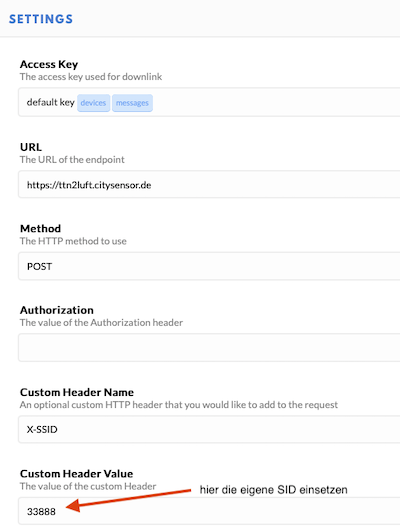

Setup (LoRA)¶
The MultiGeiger can be connected with the followng steps to TTN (“The Things Network”):
Create the TTN device in your profile at The Things Network
Transfer the parameters to the multi-pointer
Login at sensor.community (former luftdaten.info)
HTTP integration
Creating a TTN device¶
The device must be registered with TTN. To do this, an account must first be created at TTN (if one does not already exist).
Create TTN account¶
At https://account.thethingsnetwork.org/register you have to enter a USERNAME, the EMAIL ADDRESS and a PASSWORD. Then right down over Create account create the account. After that you can log in to the console with the new data (https://account.thethingsnetwork.org/users/login).
Create application¶
After you have logged in successfully, create the new application via APPLICATIONS and add applications. The following fields must be filled in:
Application ID: Any name for this application, but it must not yet exist in the network (e.g.: geiger_20200205).
Description: Any description of the application can be entered here.
Application EUI: Remains empty, the number is generated by the TTN system.
Handler registration: The pre-filled value (ttn-handler-eu) is already correct and remains.
Now add the application with Add application in the lower right corner.
Create device¶
Finally, the device has to be created. To do this, select the newly created application in the overview of applications (click). Then in the middle area at DEVICES start the creation of a new device via register device. The following fields must be filled in:
Device ID: Any name for the device. It must be unique within the application (e.g.: geiger_01) and consist only of lower-case letters.
Device EUI: Click once on the symbol on the far left of the line, then the text appears that this number is generated by the system. We don’t have to enter anything else.
App Key: No input necessary
App EUI: Stays like this
Click on Register in the lower right corner. Congratulations, the device is created.
Modifying the LoRa parameters¶
After the registration was completed, the LoRa parameters can be transferred to the program.
They can be set up at the configuration site of the Geiger counter (see above).
Go through the configuration site until the settings of the LoRa parameters are displayed. Type in the 3 parameters from the TTN console (APPEUI, DEVEUI, APPKEY). They can be found in your TTN account for each device (see above). The HEX values must be entered without spaces as they appear in the TTN.
Example: | The TTN console reads
Device EUI 00 D0 C0 00 C3 19 7C E8
Then the following must be entered:
00D0C000C3197CE8
This is also applies to APPEUI and APPKEY .
Logging data into sensor.community (formerly luftdaten.info)¶
If you want the MultiGeiger to pass recorded data to sensor.community via TTN, you have to register it. The registration is similar to the TTN registration described above. In the following, only the changes are explained:
Sensor ID: Enter the last 4 bytes of the DEVEUI in left to right order (e.g. if the DEVEUI is 00 D0 C0 00 C3 19 7C E8, so enter C3197CE8), but converted to decimal, not in HEX (finally: 3273227496).
Sensor Board: Select TTN, using the small arrows on the right.
HTTP integration¶
To get the data from TTN to sensor.community you have to enable the HTTP integration at TTN. In the TTN console click Applications and then click on the application of the GeigerCounter (e.g. geiger_20200205). On the top right in the bar with Overview, Devices, Payload Formats, Integrations, Data, Settings click Integrations. Then select HTTP Integration via add integration.
- Now fill in the displayed fields:
Process ID Enter any name for this integration here Access Key: Click here once and select the default key
URL: Enter the URL for the ttn2luft program: https://ttn2luft.citysensor.de
Method: If it reads already POST, don’t touch it
Authorization: remains empty
Custom Header Name: here comes the text X-SSID pure
Custom Header value: Enter the SSID of the sensor (the number you got when you registered at sensor.community, NOT the chip ID).
Click Add integration in the lower right corner to confirm the changes.
See this example how the form should look like:

TTN payload (example)¶
In order to get readable values in the TTN console instead of solely data bytes, a small script can be inserted as payload decoder. Go to the TTN website, log in, click Applications to find the application you created above. Select the tab Payload Formats in the menu bar and paste the following code into the field. Existing code will be overwritten):
function Decoder(bytes, port) {
// Decode an uplink message from a buffer
// (array) of bytes to an object of fields.
var decoded = {};
if(port == 1) {
decoded.counts = ((bytes[0]*256 + bytes[1]) * 256 + bytes[2]) * 256 + bytes[3];
decoded.sample_time = (bytes[4] * 256 + bytes[5]) * 256 + bytes[6];
decoded.tube = bytes[9];
var minor = (bytes[7]&0xF)+(bytes[8]>>4) ;
decoded.sw_version="" + (bytes[7]>>4) + "." + minor + "." + (bytes[8]&0xF);
}
if (port === 2) {
decoded.temp = ((bytes[0] * 256 + bytes[1]) / 10) + "°C";
decoded.humi = bytes[2] / 2 + "%";
decoded.press = ((bytes[3] * 256 + bytes[4]) / 10) + "hPa";
}
return decoded;
}